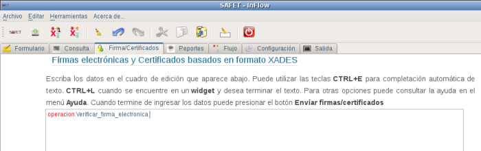
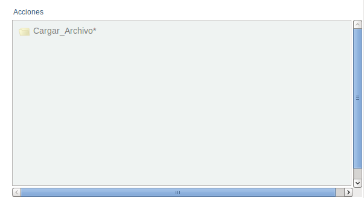
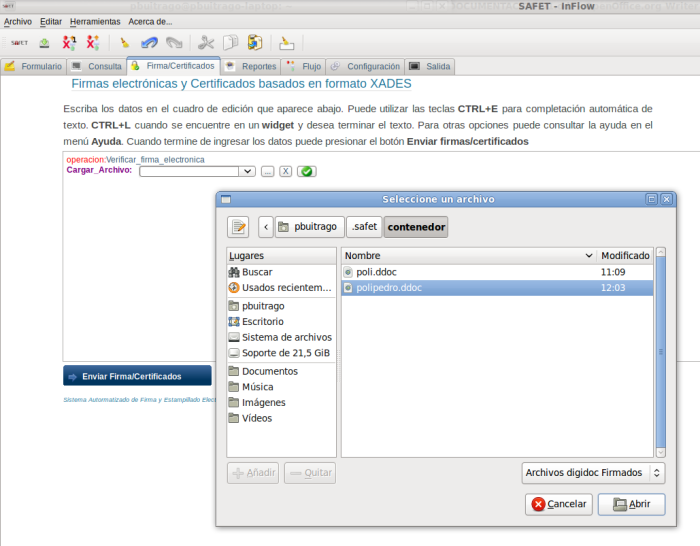

12.5.2.- operacion:Verificar_firma_electronica
Esta operación permite verificar la firma digital de un documento, Para realizar esta operación se requiere hacer click sobre la operación verificar del menú inteligente, y en el área de edición debe aparecer la linea de texto operacion:Verificar_firma_electronica (ver figura S3.3.2-1) aparte debe aparecer el menú inteligente los campos relacionadas con esta operación (ver figura S3.3.1-2)

Figura S3.3.1-1. Área cuadro de edición, selección de la operacion:Verificar_firma_electronica

Figura S3.3.1-2. Menú inteligente, campo de la operación verificar
Se requiere cargar el contenedor que almacena el documento firmado, para la misma se debe hacer click sobre el campo cargar_Archivo* menú inteligente, y debe aparecer en el cuadro de edición la linea de texto Cargar_archivo: junto con un botón de selección donde se debe marcar el contenedor. lo puedes seleccionar haciendo click al botón

se despliega una ventana donde debe seleccionar del contenedor el archivo donde se guardo la documento firmado (ver figura S3.3.1-3)

Figura S3.3.1-3. Selección del contenedor
Luego de seleccionar el archivo y proceder a darle click al botón Enviar, se debe mostrar en un cuadro de información que aparece en la parte inferior derecha el resultado de la operación